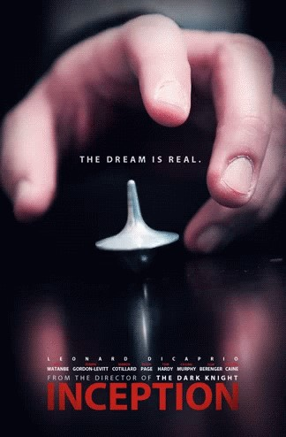

Intro
안녕하세요 컴퓨터 공학부 202015006 조희연입니다.
이번 웹프로그래밍 프로젝트에서 영화 '인셉션'을 주제로 웹페이지를 만들어 보았습니다.
이 웹에서는 영화 소개 부분과 유명한 영화 장면 부분을 나눠 소개하였고, 그 중 개인적으로 인상 깊었던 장면들을 꼽아 웹프로그래밍 수업에서 배운 것을 기초로 표현해 보았습니다.
평소 좋아하던 영화라 정말 재밌게 만들었고 많이 고민하며 배웠던 유익한 시간이였습니다.
부족하지만 잘 봐주시면 감사하겠습니다.

마우스를 올려보세요!
마우스를 올려보세요!